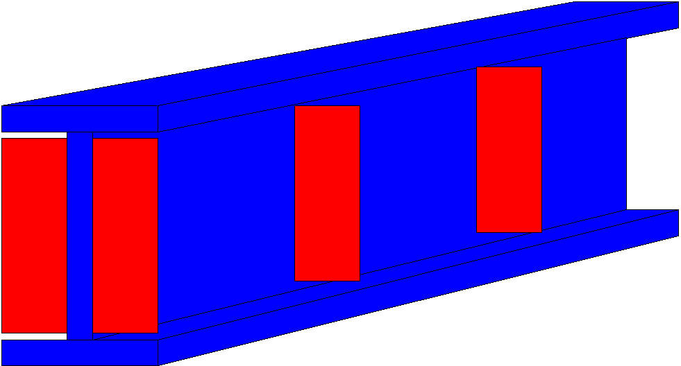

Input Transvers Stiffner Definition
Table tbTransverseStiffnerDef
PURPOSE
Add transverse stiffeners to a stringer.
The shear capacity at member ends is very dependant on how the program interprets the end condition. AASHTO 10.48.8.3 specifies that a member’s end will have a reduced shear capacity if it is a “simply supported end ( Shear Theory SS-5.2.3). The program looks at each member end and if (1) the member end has no other attached members of any kind, and (2) the member end node is not constrained in rotation, then it is a simply supported end.
Parameters
Field |
Type |
Units |
Description |
|---|---|---|---|
MbrLine |
text |
Member line name |
|
StartDist |
real |
FET |
Distance from start of member line |
EndDist |
real |
FET |
Distance from start of member line to end of this shape placement. (Entry optional) |
Plate |
text |
Plate Library table name |
|
NoSpc |
int |
Number of stiffener plate spaces between reference locations |
|
Spcng |
real |
FET |
Spacing of plates |
EfStf |
chr |
[P|N|B], Effective stiffeners, (P=positive moment, N=negative moment, B=Blank=Both) |
{kind=link}
